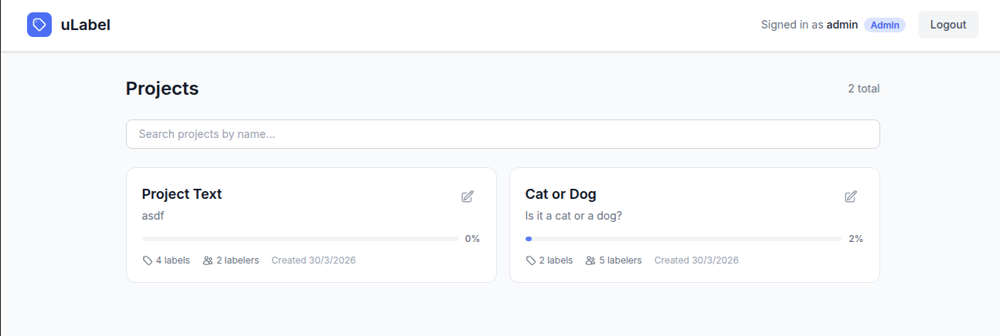
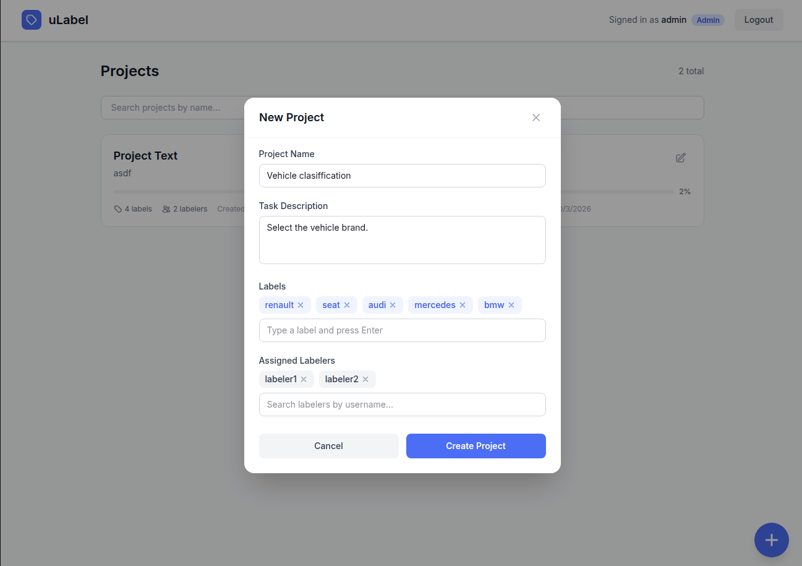
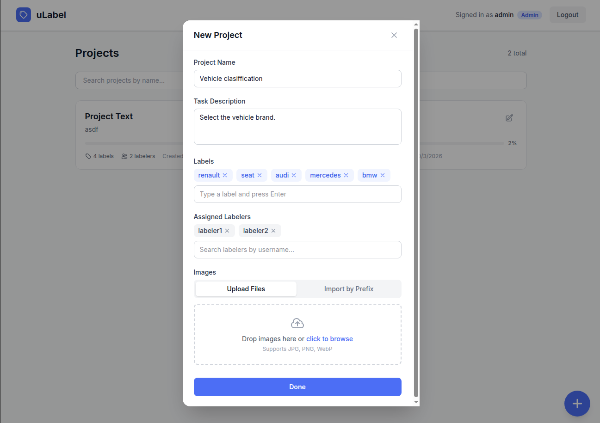
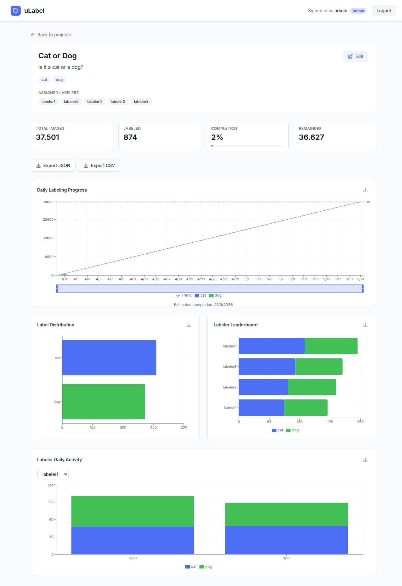
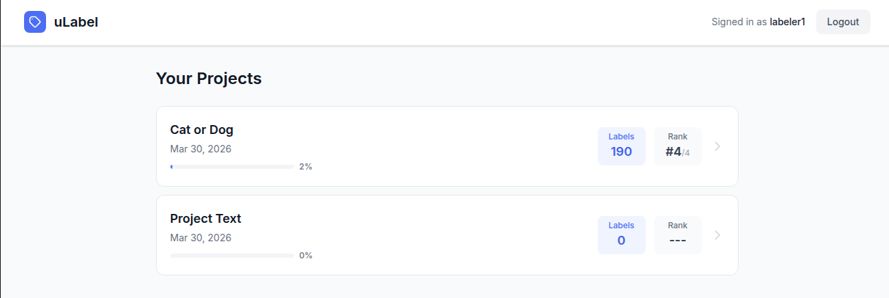
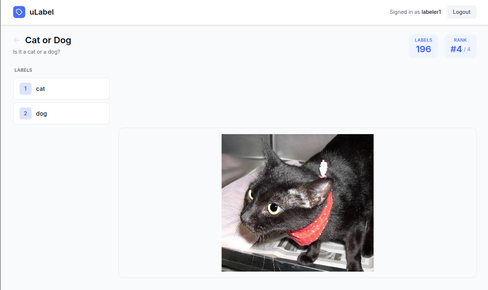

Quick Start¶
Get the full uLabel platform running locally in minutes.
Prerequisites¶
- Docker and Docker Compose (v2+)
- Make
Start the platform¶
This single command will:
- Build and start all services (backend, frontend, database, MinIO, observability stack)
- Wait for the database and API to be healthy
- Run database migrations
- Create default users (
adminandlabeler1throughlabeler10) - Download the Dogs vs. Cats dataset (~800 MB) and upload it to MinIO
Note
The first run takes a few minutes due to Docker image builds and dataset download.
Once finished, the terminal will display all access URLs and credentials.
Access the services¶
| Service | URL | Credentials |
|---|---|---|
| Frontend | http://localhost:5173 | See seeded users below |
| Backend API | http://localhost:8000 | - |
| API Docs (ReDoc) | http://localhost:8000/redoc | - |
| Documentation | http://localhost:8080 | - |
| Grafana | http://localhost:3000 | admin / admin |
| Prometheus | http://localhost:9090 | - |
| MinIO Console | http://localhost:9001 | minioadmin / minioadmin |
Seeded users (no password required):
| Username | Role |
|---|---|
admin |
Admin |
labeler1 ... labeler10 |
Labeler |
User guide¶
Admin view¶
Log in as admin at http://localhost:5173 to access the admin panel.
Projects list¶
The admin dashboard shows all projects with their progress, number of labels, assigned labelers, and creation date.

Create a project¶
Click the + button to create a new project. Set a name, description, labels, and assign labelers.

You can upload images directly or import from MinIO by prefix (useful for the seeded dataset).

Project dashboard¶
Inside a project, the admin can track progress with real-time statistics: total images, labeled count, completion percentage, daily progress chart with trend line and estimated completion, label distribution, labeler leaderboard, and individual activity charts.
Export labels in JSON or CSV format using the buttons at the top.

Labeler view¶
Log in as labeler1 (or any labeler) to see assigned projects.
Projects list¶
Each labeler sees their assigned projects with their personal label count and ranking.

Labeling interface¶
Select a project to start labeling. The interface shows the image and the available labels. Click a label (or use keyboard shortcuts 1, 2, ...) to classify the image and move to the next one.

Grafana dashboards¶
Open http://localhost:3000 (credentials: admin / admin). Pre-configured dashboards are available for:
- uLabel Overview - Platform-wide metrics
- uLabel Labeling Activity - Labeling throughput and patterns
- uLabel Traces & Logs - Request traces and application logs
Stop the platform¶
To stop and delete all data (database, uploaded images):